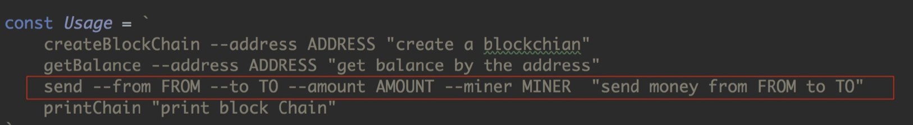

概述
小白入门：https://github.com/dukedaily/solidity-expert ，欢迎star转发，文末加V入群。
职场进阶: https://dukeweb3.com
1. 当前版本问题
交易信息是由普通字符串充当，定义完整的交易结构
挖矿没有奖励，引入挖矿奖励
没有转账机制，实现账户间转账功能
2. V4版本授课思路
定义交易结构、交易ID : 哈希、交易输入：TXInputs、交易输出：TXOutputs
根据结构调整代码，Block结构等一些列的位置（根据提示查找修改位置）
创建Coinbase，无输入（我们用一个特殊的输入表示），一个输出，有奖励
如何查找指定Address的余额
- 找到这个Address所拥有的UTXO所在的交易的集合（找交易集合）
- 根据交易集合找到这个Address所能支配的UTXO
- 根据UTXO找到所有的余额
如何转账
找到所有这笔转账所需要UTXO的集合（根据转账金额，可能是一个或多个）
完成普通交易的创建
更新命令、获取余额：getBalance、转账：send
一、定义交易结构
创建transaction.go文件，依次添加如下代码：

1. 交易输入（TXInput）
指明交易发起人可支付资金的来源，包含：
- 引用utxo所在交易的ID
- 所消费utxo在output中的索引
- 解锁脚本
type TXInput struct {
//引用output所在交易ID
TXID []byte
//应用output的索引值
VoutIndex int64
//解锁脚本
ScriptSig string
}
2. 交易输出（TXOutput）
包含资金接收方的相关信息,包含：
接收金额
锁定脚本
==易错点：经常把Value写成小写字母开头的==，这样会无法写入数据库，切记！
type TXOutput struct {
//接收的金额
Value float64
//锁定脚本
ScriptPubKey string
}
3. 交易结构
type Transaction struct {
//交易ID
TXID []byte
//交易输入，可能是多个
TXInputs []TXInput
//交易输出，可能是多个
TXOutputs []TXOutput
}
4. 设置交易ID方法
//设置交易哈希
func (tx *Transaction) setHash() {
var buffer bytes.Buffer
encoder := gob.NewEncoder(&buffer)
encoder.Encode(tx)
data := buffer.Bytes()
hash := sha256.Sum256(data)
tx.TXID = hash[:]
}
二、创建Coinbase交易
coinbase总是新区块的第一条交易，这条交易中只有一个输出，即对矿工的奖励，没有输入。
//address 是矿工地址，data是矿工自定义的附加信息
func NewCoinbaseTX(address string, data string) *Transaction {
if data == "" {
data = fmt.Sprintf("reward %s %f\n", address, reward)
}
//比特币系统，对于这个input的id填0，对索引填0xffff，data由矿工填写，一般填所在矿池的名字
input := TXInput{nil, -1, data}
output := TXOutput{reward, address}
txTmp := Transaction{nil, []TXInput{input}, []TXOutput{output}}
txTmp.setHash()
return &txTmp
}
中本聪在创世块中添加信息：
"The Times 03/Jan/2009 Chancellor on brink of second bailout for banks"
泰晤士报 2009年1月3日 财政大臣将再次对银行施以援手
在最上面添加下列代码，表示挖矿奖励数目。
const reward = 12.5
三、根据Transaction调整代码
1. block改写
使用交易数组代替Data，代码如下：
type Block struct {
//区块头：
//比特币网络的版本号
Version uint64
//当前区块的哈希，注意，这是为了方便写代码而加入的。比特币不在区块中存储当前区块的哈希值
Hash []byte
//前区块的哈希值，用于连接链条
PrevBlockHash []byte
//梅克尔根，用于快速校验区块，校验区块的完整性。
MerkleRoot []byte
//时间戳，表示区块创建的时间
TimeStamp uint64
//难度值，调整挖矿难度
Difficuty uint64
//随机值，挖矿需要求的数字
Nonce uint64
//区块体：
//区块数据
//Data []byte
Transactions []*Transaction //这里<------------
}
2. NewBlock改写
func NewBlock(txs []*Transaction, prevHash []byte) Block { //这里<------------
var block Block
block = Block{
Version: 0,
PrevBlockHash: prevHash,
//Hash: []byte{},
MerkleRoot: []byte{},
TimeStamp: uint64(time.Now().Unix()),
Difficuty: 10,
Nonce: 10,
Transactions:txs} //这里修改 <---------------
pow := NewProofOfWork(block)
hash, nonce := pow.Run()
block.Hash = hash
block.Nonce = nonce
return block
}
3. NewBlockChain改写
//中本聪在创世块中保存的信息
const genesisInfo = "The Times 03/Jan/2009 Chancellor on brink of second bailout for banks"
//- 提供一个创建BlockChain的方法
func NewBlockChain(address string) *BlockChain { //<------这里修改
var lastHash []byte
...
db.Update(func(tx *bolt.Tx) error {
bucket := tx.Bucket([]byte(blockBucket))
...
//创建coinbase交易 <---这里修改
coinbaseTx := NewCoinbaseTX(address, genesisInfo)
//创建创世块 <---这里修改
genesisBlock := NewBlock([]*Transaction{coinbaseTx}, []byte{})
...
}
}
4. AddBlock改写
func (bc *BlockChain)AddBlock(txs []*Transaction) {
...
//创建新区块
newBlock := NewBlock(txs, lastBlockHash) //<----修改这里
...
}
5.修改prepareData函数
在ProofOfWork.go文件中，
func (pow *ProofOfWork) prepareData(num uint64) []byte {
block := pow.block
block.MerkleRoot = block.HashTransactions() //<----这里修改了
tmp := [][]byte{
uintToByte(block.Version),
block.PrevBlockHash,
//block.Hash,
block.MerkleRoot,
uintToByte(block.TimeStamp),
uintToByte(block.Difficuty),
uintToByte(num)}
//block.Data} //<----这里修改了
data := bytes.Join(tmp, []byte{})
return data
}
==在比特币中，其实是对区块头进行哈希运算，而不是对区块整体进行哈希运算。==
==比特币系统根据交易信息生成Merkel Root哈希值，所以交易可以影响到区块的哈希值。==
6. HashTransaction函数实现
这个函数是为了生成Merkel Tree Root哈希值，正常的生成过程是使用所有交易的哈希值生成一个平衡二叉树，此处，为了简化代码，我们目前直接将区块中交易的哈希值进行拼接后进行哈希操作即可。
func (block *Block)HashTransactions() []byte {
var tmp [][]byte
for _, tx := range block.Transactions{
//交易的ID就是交易的哈希值，还记得吗？我们在Transaction里面提供了方法。
tmp = append(tmp, tx.TXID)
}
data := bytes.Join(tmp, []byte{})
hash := sha256.Sum256(data)
return hash[:]
}
7.修改commandLine.go文件
在Run()函数中，注释如下语句

在打印函数中，注释如下语句

四、第一次测试
1. 编译
go build *.go
2.创建区块链
请先删掉本地数据库，执行如下命令

3.使用strings查看
目前我们的打印命令不可使用，已经被注释，所以可以使用strings命令简单查看一下，确认信息已经写入数据库。

好的，至此我们已经成功的将创世块写入数据库，恭喜！
五、我到底有多少比特币？
我们都知道比特币通过转账在系统中流通，付款人的钱包会使用付款人的解锁脚本解开能够支配的UTXO，完成花费。同时使用收款人的地址对付款金额进行锁定，使之完成接收，从而实现金额的转移。
这里又提到了锁定脚本和解锁脚本，我们使用函数来模拟脚本交易
- ==先写GetBalance==
- 在将逻辑提出到新的函数FindMyUtox
- 改写成UTXOInfo结构
- 实现FindNeedUTXOInfo， 直接返回UTXOInfo结构
- 实现NewTransaction
1.解锁脚本
解锁脚本是检验input是否可以使用由某个地址锁定的utxo，所以对于解锁脚本来说，是外部提供锁定信息，我去检查一下能否解开它。
我们没有涉及到真实的非对称加密，所以使用字符串来代替加密和签名数据。即使用地址进行加密，同时使用地址当做签名，通过对比字符串来确定utxo能否解开。
在transaction.go中，添加解锁脚本如下：
func (input *TXInput) CanUnlockUTXOWith(unlockData string /*收款人的地址*/) bool {
//ScriptSig是签名，v4版本中使用付款人的地址填充
return input.ScriptSig == unlockData
}
2.锁定脚本
同样的，锁定脚本是用于指定比特币的新主人，在创建output时创建。对于这个output来说，它应该是一直在等待一个签名的到来，检查这个签名能否解开自己锁定的比特币。
func (output *TXOutput) CanBeUnlockedWith(unlockData string/*付款人的地址（签名）*/) bool {
//ScriptPubKey是锁定信息，v4版本中使用收款人的地址填充
return output.ScriptPubKey == unlockData
}
3.获取指定地址的UTXO的交易集合
我们的比特币都在UTXO中，UTXO又包含在交易中，所以如果想知道我们可以支配的UTXO，必须找到这些UTXO所在的交易，每个人有N个UTXO，所以我们需要找到所有的交易，也就是说，应该找到包含UTXO的交易的集合。
==这是一个核心函数==，代码如下：
//返回指定地址能够支配的utxo所在的交易的集合
func (bc *BlockChain) FindUTXOTransactions(address string) [] Transaction {
var transactions []Transaction
spentUTXOs := make(map[string][]int64)
it := bc.NewIterator()
for {
//遍历区块
block := it.Next()
//遍历交易
for _, tx := range block.Transactions {
OUTPUTS:
//遍历outputs
for currentIndex, output := range tx.TXOutputs {
//过滤已经消耗过得utxo
if spentUTXOs[string(tx.TXID)] != nil {
//交易id非空， 意味着在交易里面有消耗的utxo
indexs := spentUTXOs[string(tx.TXID)]
for _, index := range indexs {
if int64(currentIndex) == index {
continue OUTPUTS
}
}
}
if output.CanBeUnlockedWith(address) {
transactions = append(transactions, *tx)
}
}
//遍历inputs
if !tx.IsCoinbase() {
for _, input := range tx.TXInputs {
//检查一下当前的inputs是否和地址有关，能否解开
//看看当前花费的这个input是不是和指定的地址有关，如果有关，要记录下来，
//这样遍历前面的交易时，就不会再对这个引用的output重复统计了。
if input.CanUnlockUTXOWith(address) {
spentUTXOs[string(input.TXID)] = append(spentUTXOs[string(input.TXID)], input.VoutIndex)
//map[0x000000] = []int64{0}
//map[0x111111] = []int64{2,5}
//map[0xnnnnnn] = []int64{3}
}
}
}
if len(block.PrevBlockHash) == 0 {
break
}
}
}
return transactions
}
分析一个示例（跟着代码流程走）：
- Lily挖矿得到12.5btc，分析当前Lily的output情况。
- Lily转账给Tom10btc，再次分析Liliy的output情况。
4.IsCoinbase函数实现
根据coinbase的特点进行判断，请参考签名NewCoinbase函数
func NewCoinbaseTX(address string, data string) *Transaction {
...
input := TXInput{nil, -1, data}
...
}
具体实现：
func (tx *Transaction) IsCoinbase() bool {
if len(tx.TXInputs) == 1 {
if tx.TXInputs[0].TXID == nil && tx.TXInputs[0].VoutIndex == -1 {
return true
}
}
return false
}
5.获取指定地址的UTXO的集合
我们已经获取到了所有的交易集合，那么utxo集合便非常容易获取，只需要遍历交易即可。
//返回指定地址能够支配的utxo的集合
func (bc *BlockChain) FindUTXOs(address string) []TXOutput {
txs := bc.FindUTXOTransactions(address)
var utxos []TXOutput
for _, tx := range txs {
for _, output := range tx.TXOutputs {
//找到自己能解锁的output
if output.CanBeUnlockedWith(address) {
utxos = append(utxos, output)
}
}
}
return utxos
}
6.获取余额
我们说过，比特币是没有余额概念的，所以这个属于钱包的功能，我们把它放到CLI中去实现。
此时只需要遍历UTXO，然后累计里面的value字段的值即可。
在commandLine.go中添加如下代码：
func (cli *CLI)GetBalance(address string) {
bc := GetBlockChainObj()
defer bc.db.Close()
utxos := bc.FindUTXOs(address)
var total float64
for _, utxo := range utxos{
total += utxo.Value
}
fmt.Printf("The balance of %s is : %f\n", address, total)
}
添加getBalance命令如下：
case "getBalance":
if len(os.Args) > 3 && os.Args[2] == "--address" {
address := os.Args[3]
if address == "" {
fmt.Println("address should not be empty!")
os.Exit(1)
}
cli.GetBalance(address)
} else {
fmt.Println(Usage)
}
更新Usage：

六、第二次测试
编译执行，获取挖矿，删除db，执行如下命令，可以看到挖矿奖励。

发财了！
七、创建交易（转账）
到目前为止，我们已经完成了70%的工作，接下来就是实现核心功能--转账。
我们的AddBlock命令一直是被注释的状态，接下来就要把它重新用起来。
转账通过交易，所以我们要完成交易的创建，前面已经实现过一个交易，即挖矿奖励交易Coinbase，我们回顾一下，
//address 是矿工地址，data是矿工自定义的附加信息
func NewCoinbaseTX(address string, data string) *Transaction {
if data == "" {
data = fmt.Sprintf("reward %s %f\n", address, reward)
}
//比特币系统，对于这个input的id填0，对索引填0xffff，data由矿工填写，一般填所在矿池的名字
input := TXInput{nil, -1, data}
output := TXOutput{reward, address}
txTmp := Transaction{nil, []TXInput{input}, []TXOutput{output}}
txTmp.setHash()
return &txTmp
}
这个交易十分特殊，没有输入，只有输出，而我们真实的交易一定有输入输出，以及输出金额，所以我们的原型定义如下：
func NewTransaction(from, to string, amount float64, bc *BlockChain) *Transaction {
//TODO
}
from：付款人
to：收款人
amount：转账金额
bc：区块链本身
1. 普通交易创建
在transaction.go中添加如下代码：
func NewTransaction(from, to string, amount float64, bc *BlockChain) *Transaction {
//map[txid][]int64
validUTXOs := make(map[string][]int64)
var total float64
//第一部分，找到所需要的UTXO的集合
validUTXOs /*本次支付所需要的utxo的集合*/ , total /*返回utxos所包含的金额*/ = bc.FindSuitableUTXOs(from, amount)
if total < amount {
fmt.Println("Money is not enough!!!")
os.Exit(1)
}
//将返回的utxo转换成input
var inputs []TXInput
var outputs []TXOutput
//第二部分，input的创建
for txid, indexs := range validUTXOs{
for _, index := range indexs{
input := TXInput{[]byte(txid), index, from}
inputs = append(inputs, input)
}
}
//第三部分，output的创建
output := TXOutput{amount, to}
outputs = append(outputs, output)
if total > amount {
outputs = append(outputs, TXOutput{total-amount, from})
}
txTmp := Transaction{nil, inputs, outputs}
txTmp.setHash()
return &txTmp
}
这个函数分为三个部分，
- 第一部分：找到所有需要的UTXO（有可能余额不足，余额正好，有剩余）
- 第二部分：根据找到UTXO生成Input
- 第三部分：生成Output，包括给收款人以及找零（如果有剩余）
2.辅助函数FindSuitableUTXOs
在blockChain.go文件中，添加如下代码：
func (bc *BlockChain) FindSuitableUTXOs(address string, amount float64) (map[string][]int64, float64) {
txs := bc.FindUTXOTransactions(address)
validUTXOs := make(map[string][]int64)
var total float64 = 0
CALCULATE:
for _, currentTx := range txs {
for currentIndex, output := range currentTx.TXOutputs {
if output.CanBeUnlockedWith(address) {
if total < amount {
total += output.Value
//indexs := validUTXOs[string(currentTx.TXID)]
//indexs = append(indexs, int64(currentIndex))
validUTXOs[string(currentTx.TXID)] = append(validUTXOs[string(currentTx.TXID)], int64(currentIndex))
} else {
break CALCULATE
}
}
}
}
return validUTXOs, total
}
这个函数的功能为：找到指定地址所需金额的UTXO的集合，同时将这些UTXO总额一并返回。
八、添加send命令
1. 参数
我们将使用send命令实现转账功能，包含参数有：
| from | 付款人 |
|---|---|
| to | 收款人 |
| amount | 金额 |
| miner | 矿工 |
由于我们没有涉及到网络，所以我们手动指定矿工，完成资源分配
2. 调整代码
func (cli *CLI)Send(from , to string, amount float64, miner string) {
bc := GetBlockChainObj()
tx := NewTransaction(from, to, amount, bc)
defer bc.db.Close()
//指定挖矿交易
coinbase := NewCoinbaseTX(miner, "")
bc.AddBlock([]*Transaction{coinbase, tx})
fmt.Println("Send Successfully!")
}
修改Usage如下（注意，删除了addBlock --data DATA命令）

3.参数解析
case "send":
//send --from FROM --to TO --amount AMOUNT --miner MINER "send money from FROM to TO"
if len(os.Args) < 10 {
fmt.Println(Usage)
os.Exit(1)
}
//简单粗暴，缺少校验，先看效果，马上整改
from := os.Args[3]
to := os.Args[5]
amount, _ := strconv.ParseFloat(os.Args[7], 64)
miner := os.Args[9]
cli.Send(from, to, amount, miner)
case "printChain":
...
九、第三次测试
由于send我们没有做有效性校验，所以命令要严格按照Usage中的顺序填写，后续会优化代码，请稍安勿躁。
请以此执行下列命令，感受btc的转移。
duke ~/Desktop/code/v4$ ./block getBalance --address duke
The balance of duke is : 12.500000
duke ~/Desktop/code/v4$ ./block send --from "duke" --to "lily" --amount 10 --miner "Tom"
target : 100000000000000000000000000000000000000000000000000000000000
found hash : 00000aeaaaf14392e923bc97acd41fa21316c1202587d25faf0b2c5617d115fd, 641020
Send Successfully!
duke ~/Desktop/code/v4$ ./block getBalance --address duke
The balance of duke is : 2.500000
duke ~/Desktop/code/v4$ ./block getBalance --address lily
The balance of lily is : 10.000000
duke ~/Desktop/code/v4$ ./block getBalance --address tom //<-----账本中没有他，所以为零
The balance of tom is : 0.000000
duke ~/Desktop/code/v4$ ./block getBalance --address Tom
The balance of Tom is : 12.500000
测试金额不足情况

十、小结
在v4版本中，我们引入了交易结构，奖励机制，实现了转账功能，相信各位已经对交易关系有了更深的理解。
但是我们的程序依然存在如下几个问题：
- 没有引入真正的地址，目前是使用字符串代替，如“lily”（v5解决）
- utxo集，目前每次查询余额时，程序都会遍历整个区块链账本，这样很慢，真实的比特币全节点客户端会维护一个utxo池，放在内存中维护，便于快速查询。（v6解决）
- 内存交易池，用于存放即将被打包的交易，我们目前的程序中，每个区块只有一条普通交易。（待开发）
十一、下节预告
地址钱包 + 数字签名